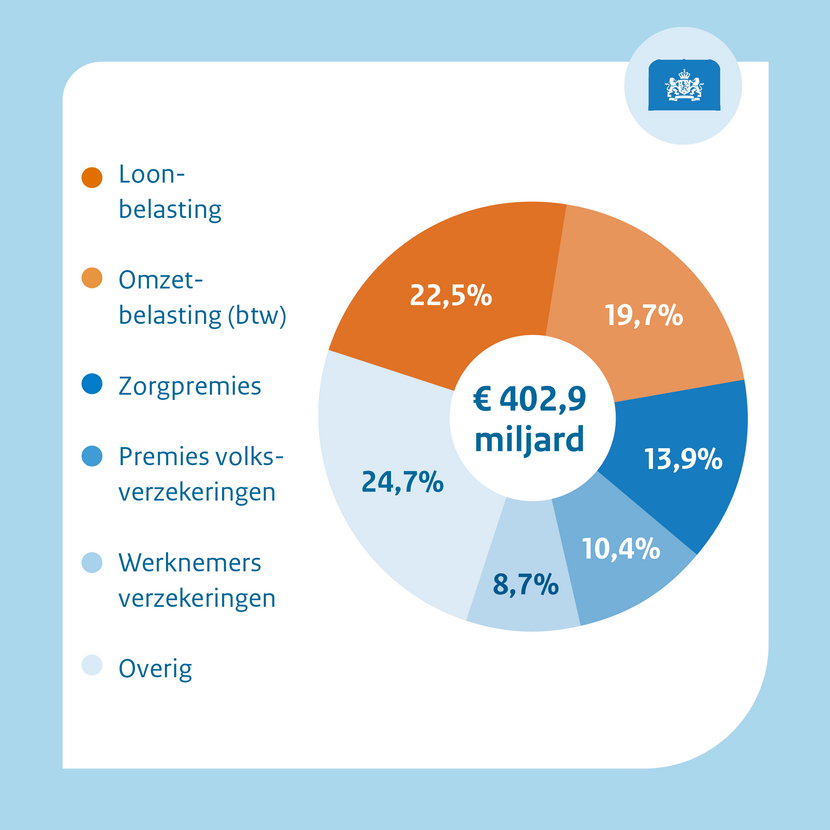
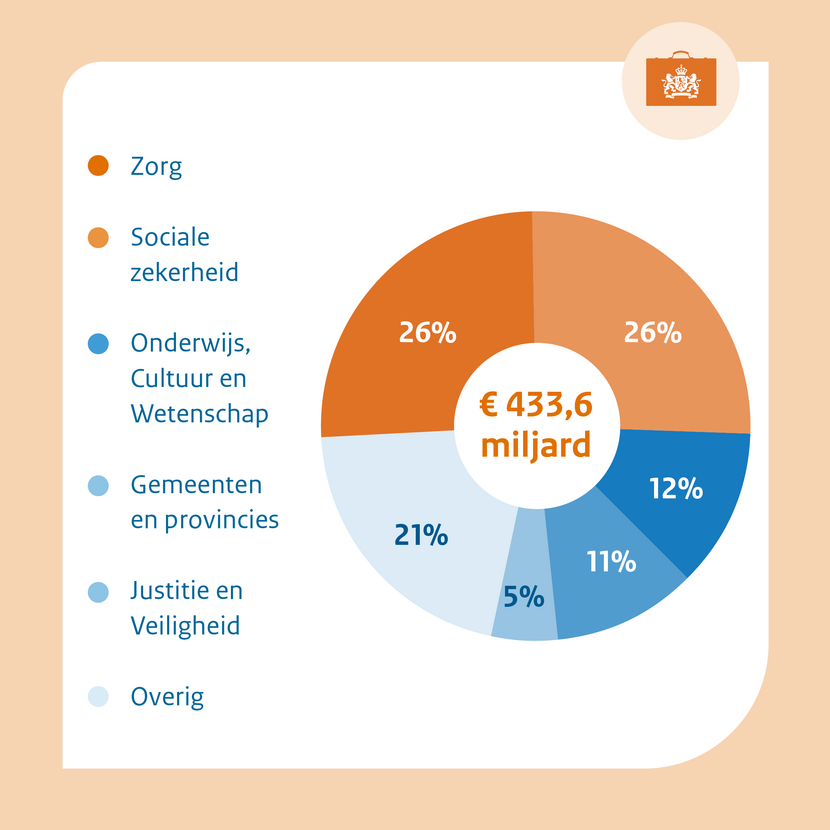
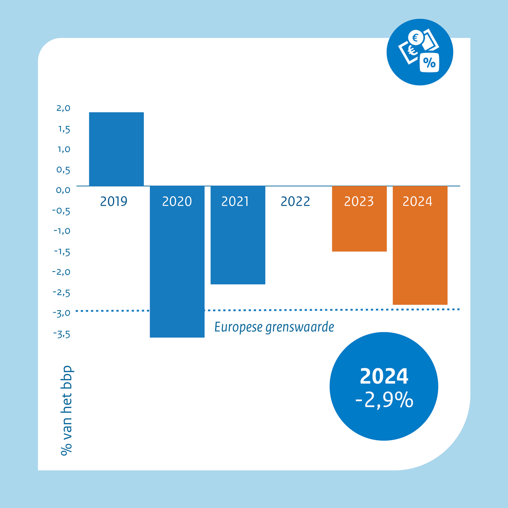
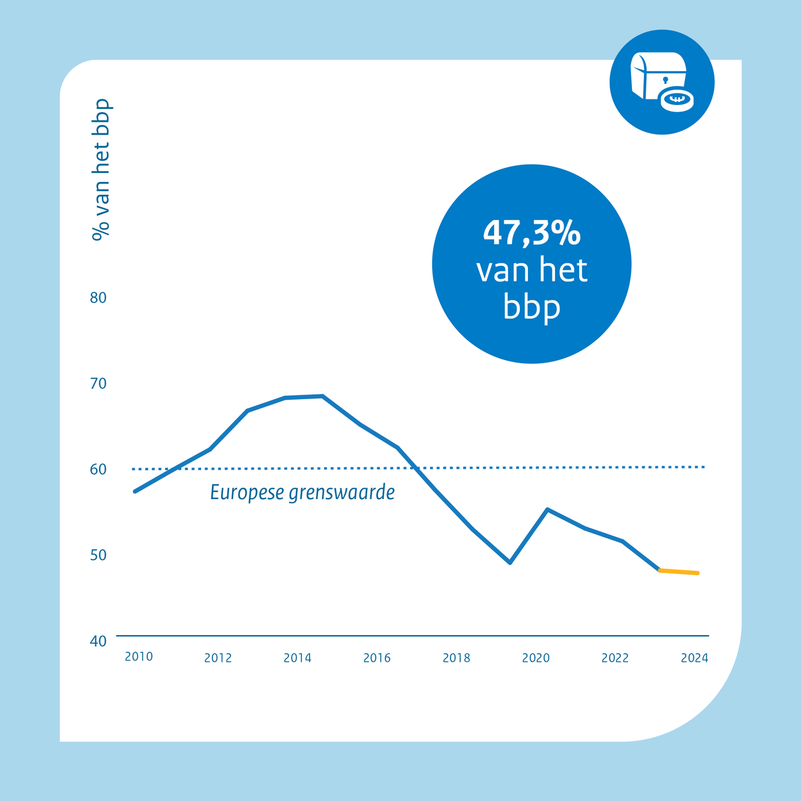

Public Economics
BSc Course
Monday, February 2, 2026
About
This Course
Part I: Public Sector Tasks and Public Expenditure
- Public Economics, Public Finance, and The Role of The State
- Public Goods: Market & Gov’t Failure
- Social Insurance and Regulation
Prerequisites
- required background: microeconomics
- see Microeconomics Review slides
- we require you to have at least a good modeling intuition
Part II: Public Revenue
- Taxation, Incidence, and Optimality
- Income Taxation and Redistribution
- Tax Evasion, Avoidance, and Tax Competition
Recommendations
- some proficiency in algebra, calculus and statistics is helpful
- regularly attend all meetings (including lectures)
Practicalities
Class Meetings
lectures Mondays and Wednesdays
workshops
Preparation
- class time is too precious to repeat all detail: read up in advance
- exercises and exams: know your economic diagrams well!
Exam
- written individual pen-and-paper exam
- 40% mid-term exam (at end of week 3)
- 60% end-term exam (week 8)
weighted sum \(\ge 5.5\), else - 100% resit (2nd half May)
Desmos/Amplify
- we use interactive Desmos graphs and activities in many places
- we try to make models insightful, with less emphasis on math
- bring your laptop to class to benefit from interactivity
Slide Deck
Purpose
- slides are incomplete reflections of reading material
- interactive graphs: play for intuition
Technicalities
- html format
- embed web-based material
- intended for screen use
- created with Quarto
Copyright
© Stefan Hochguertel, 2025-26, all rights reserved
- notify the author of issues (typos, errors, omissions, inconsistencies)
- license:


1 Public Economics, Public Finance, and the Role of Government
1.1 Public Economics
Public Economics
- studies the role of gov’t in a market economy
- main reason: unfettered market outcomes not always desirable
policy areas
- education
- health care
- labor market policies
- social insurances and protection
- environmental policies
- spatial policies
policy tools
- fiscal
- taxation and subsidization
- borrowing
- regulation
- choice architecture
- nudges
- normative perspective
- economic incentives and economic institutions
- individual rationality \(\neq\) collective rationality
- behavioral public finance: individual rationality?
- trade-off efficiency \(\leftrightarrow\) equity
- market failure \(\leftrightarrow\) gov’t failure
- setting the fame: good governance
- macroeconomic policies, fiscal policy
- market failure: provision of goods and services if underprovided by markets
- coordination function: between societal stakeholders
- protection: of civil society and the environment
- equitable society and fairness
Schools of Thought in Public Economics
- overall aim: maximization of ‘social welfare’
- and a number of subordinate goals
- normative aspect: gov’t serves the interest of the public (citizen-based)
- functional gov’t, benevolent social planner (gov’t as tool)
- strong microeconomic foundations
- contributors: Paul Samuelson, Kenneth Arrow, Joseph Stiglitz, Anthony Atkinson, Richard Musgrave, Martin Feldstein
- positive aspect: political actors act strategically and pursue their own interest
- maximization of ‘social welfare’ is secondary to personal goals of actors
- foundations in both microeconomics (including applied game theory) and political science
- contributors: George Stigler, Gordon Tullock, James Buchanan, Anthony Downs, Mancur Olson
- positive: individual consumers may not be entirely rational
- neoclassical revealed preference paradigm may not apply
- normative: concept of ‘welfare’ less well-defined
- foundations in psychology and experimental economics
- contributors: Richard Thaler, Cass Sunstein, Douglas Bernheim, Antonio Rangel, Brigitte Madrian
Institutions
fundamental institutions
- constitutional rules
- rule of law
- political system
economic institutions
- property rights
- tax and transfer system
- supervisory and regulatory authorities
- competition and innovation policy
Gov’t failure / institutional failure
- not serving the people
- not maximizing social welfare (subject to realistic constraints)
- abusing its powers
- creating inefficiencies and inequities that a market system would not generate
Reasons
- inefficiencies of bureaucracy, transaction costs (inc. monitoring and enforcement costs)
- encouraging tax evasion and avoidance, shadow economy
- self-serving behavior of public servants, policy makers, and elected officials
- importance of electoral cycle
- informational asymmetries
- including (regulatory) capture
1.2 Public Sector & Public Finance
Public Tasks and Public Finance

- tasks determine expenditure
- expenditure requires revenue
- under long-term planning
- cyclical occurrence of deficits and surpluses
- increase/decrease of gov’t debt
- note: interest feedback cycle (causing future expenditure)
- automatic stabilization
- SGP: EMU limits on deficit and debt
- procedures (six-pack, two-pack)
- cyclical occurrence of deficits and surpluses
NL: Public Finances 2024
 
 
CBS Dashboard Overheidsfinanciën
Statistics Netherlands (CBS) collects and documents historical data and trends, it informs policymakers without interpreting.
The Netherlands Bureau for Economic Policy (CPB) predicts developments into the future, partly based on ppolicy scenarios and informs and advises policymakers.
The Gov’t informs parliament and public on budget realizations and plans for the future, reflecting policy decisions.
Government Spending over 2 Centuries
Size of Government
1.3 Economic Modeling for Policy Purposes
Economic models …
- … have particular features; e.g., they
- are often concerned with capturing the essence of decision-making of human or organizational actors
- often study interactions of agents
- may be computational
- … come in a number of guises; e.g.,
- theoretical models (one or more mathematical equations)
- empirical models (one or more statistical equations)
- … have a number of uses
- description of part of reality
- prediction of what happens next
- understanding a mechanism
- understanding how policy tools work
- simulation of what may plausibly be expected when changing the environment
Example Microeconomic Forecast
CPB: individual household purchasing power simulations, based on microdata (CBS)
{kind=link}
{kind=link}
Institutes Bridging Economic Modeling and Policy
CPB Netherlands Bureau for Economic Policy Analysis
- founded in 1945, founding director Jan Tinbergen (Nobel Laureate Economics)
- organizational part of Ministry of Economic Affairs
- but independent research institute and think tank
- focus on the Dutch economy, including international trade relations, and micro-based socio-economic policy (including labor markets, pensions, education, health, competition policy and regulation)
known for
- model-based predictions and forecasts
- model-based distributional analysis
- public finance advice to government and macroeconomic outlook
- public finance advice to election campaigns
- founded in 1969
- independent research institute and policy think tank
- focus on the UK economy, including international trade relations, and micro-based socio-economic policy (including labor markets, poverty, inequality, social mobility, pensions, education, health, competition policy and regulation)
known for
- being at the forefront of economic policy design, including academic, methodological development
- closely linked to leading academic departments in economics at UCL and LSE
- model-based predictions and forecast
- budget analysis
- thorough policy reviews bridging theory and practice
CES-Ifo International Research Network
- founded as Ifo in 1949, from 1999 on cooperating with Center for Economic Studies at the economics department of LM University Munich
- independent research institute
- focus on empirical economic data analysis, including data collection and dissemination to a wider interested public
- macroeconomic data, labor markets, industrial organization
known for
- leading macroeconomic indicators, in particular a business sentiment index (Business Climate Index)
- regular reporting on the German economy, policy advice to government
- academic CES-Ifo network with high international visibility
Organisation for Economic Co-operation and Development
- founded in 1961 (as successor of the 1948 OEEC) and supported by currently 38 member states (typically Western, high-income democracies)
- intergovernmental organisation using economic data analysis and modeling with the aim to stimulate economic progress and world trade
- focus on issues requiring international cooperation, such as international trade, international tax policy, climate change, energy and resources
known for
- harmonized international data base of economic indicators
- dissemination of policy reports
- documentation of institutional differences between member states in various policy domains
- highly influential in international policy making
- founded in 1916 as non-profit, independent and nonpartisan policy think tank in Washington, DC, USA
- focus on research and education in social science, economics, public finance, public policy, development policy
known for
- dissemination of academically founded policy reports
- policy advice of federal government
- network of affiliated academic scholars
- semi-annual journal: Brookings Papers on Economic Activity
1.4 Foundational Microeconomic Principles
Deriving Demand
- demand function derives from the consumer’s optimal choice of \(x\)
- it relates quantity demanded \(x\) to the price \(p_x\) of the good, \(x = D(p_x)\)
Demand Diagram
Recall that economists write \(x = D(p_x)\) while putting \(p_x\) on the vertical and \(x\) on the horizontal axis.
- in two-goods model, maximization of utility \(u(x,y)\) s.t. \(m=p_x \cdot x + p_y \cdot y\) leads to \[ \begin{split} x &= D_x(p_x,p_y,m) \\ y &= D_y(p_x,p_y,m) \\ \end{split} \]
- all quantities can depend on all prices and incomes
Lagrange function with multiplier \(\lambda\) \[ {\cal L}(x,y,\lambda) = u(x,y) - \lambda \cdot (p_x \cdot x + p_y \cdot y-m) \]
FOCs: \[\begin{eqnarray*} \frac{\partial {\cal L} }{\partial x} =\;\; \frac{\partial u(x,y)}{\partial x} - \lambda \cdot p_x &=& 0 \\ \frac{\partial {\cal L} }{\partial y} =\;\; \frac{\partial u(x,y)}{\partial y} - \lambda \cdot p_y &=& 0 \\ \\ \\[2mm] \frac{\partial {\cal L} }{\partial \lambda} = m- p_x \cdot x - p_y \cdot y &=& 0 \end{eqnarray*}\]
find: marginal condition \[\left. \begin{array}{ccc} \frac{\partial u(x,y)}{\partial x} &=& \lambda \cdot p_x \\ \frac{\partial u(x,y)}{\partial y} &=& \lambda \cdot p_y \end{array} \right\} \qquad\to\qquad \underbrace{ \frac{\frac{\partial u(x,y)}{\partial x}}{\frac{\partial u(x,y)}{\partial y}} }_{MRS} = \underbrace{\frac{p_x}{p_y}}_{slope~BC} \]
and level condition \[m= p_x \cdot x + p_y \cdot y\]
\(\to\) combine, eliminate \(y\), find demand function \(x=D_x(p_x,p_y,m)\)
Price Changes: Income and Substitution Effects
- There are two effects on \(x\) from an increase in \(p_x\)
lower purchasing power, all goods less affordable (income effect IE)
move away from relatively more expensive good (substitution effect SE)
- IE/SE may go in the same, or in opposite directions
- shape of indifference curves and/or MRS matters a lot
- A is observed before-price change of \(x\)
- B is observed after-price change
- C is ‘virtual’ point: choice that would’ve been made had the consumer been fully utility-compensated for the income effect (drop in purchasing power)
- utility level / IC is the same in A and C
- A\(\to\)B is total effect (TE)
- A\(\to\)C is substitution effect (SE, along IC)
- C\(\to\)B is income effect (IE, between ICs)
- TE, IE and SE are measured along the \(x\)-quantity axis
Measuring Consumer Welfare
- consumer surplus as canonical welfare
- measure welfare changes expressed in money terms
- renormalize \(p_y\equiv 1\), always
- vertical intercept (on \(y\)-axis) then equals \(m\)
- “area under the demand curve”
- \(p\) on vertical axis – “under” means left of demand curve (“integrate” over price)
- measure change of consumer surplus as price changes
- price increase: loss of consumer surplus
- income policy transfers money to recipients in face of a price hike
- many types are possible, e.g.
- full compensation
- Slutsky compensation (old bundle)
- Hicks compensation (old IC)
- incomplete compensation
compensating variation (CV) corresponds to the cheapest (hypothetical) compensation that would leave recipient indifferent between experiencing and not experiencing the price hike
involves Hicks compensation, holding constant orginal level of utility, under new prices
CV as vertical intercept shift of budget constraint in consumer choice diagram
CV as area “under” demand curve
- compensated demand curve (compensated for IE)
- similar to but different from the usual demand curve (tilted clockwise)
- compensated demand ‘steeper’ than uncompensated demand under positive IE
- same graph as IE/SE analysis, but focus on income change along vertical axis
- denote budget before and after price change: \(m_0\) and \(m_1\), then \(\Delta_m = m_0-m_1 \lt 0\) is the money-metric change in welfare that consumer experiences from price change, unless compensated
- when price goes up, welfare goes down
Change of Consumer Surplus
Compensating Variation
Conclusion
Summary
- public economics studies the role of government, typically in a market economy
- gov’t is the largest player in any advanced and complex economy; its importance rose over time
- gov’t tasks include
- running institutions that step in where markets would fail (public goods, externalities, information and insurance problems, macroeconomic stabilization)
- pursue equitable access to and distribution of opportunities and resources
- possibly guide consumers to make better decisions for themselves
- gov’t budgets reflect importance of tasks only to some extent, since financial flows are dominated by redistribution and insurance
- to guide good policy making, need to have a good understanding of economics
- review: measuring consumer welfare

BSc Course • Public Economics • © 2025-26 Stefan Hochguertel
Social Spending